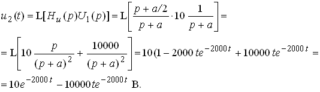
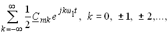

Эталоны ответов тестовых заданий 2-го уровня
Эталон задания 2.1.1 (6 с. о.)
При резонансе напряжений реактивные сопротивления конденсатора и индуктивной катушки:
 Ом. Ёмкость конденсатора С = 1/(2pfXC = 1/(314 × 45) = 70,8 мкФ.
Ом. Ёмкость конденсатора С = 1/(2pfXC = 1/(314 × 45) = 70,8 мкФ.
Индуктивность катушки L = XL/2pf = 45/314 = 0,143 Гн.
Входное активное сопротивление цепи при резонансе:  Ом. Откуда
Ом. Откуда  = 50 - R.
= 50 - R.
Активные сопротивления индуктивной катушки и реостата:
 . Откуда = 4R = 40 Ом и R = 10 Ом.
. Откуда = 4R = 40 Ом и R = 10 Ом.
Проверка: напряжение на зажимах индуктивной катушки
B.
Эталон задания 2.1.2 (4 с. о.)
Импульсная и переходная функции цепи по напряжению:
Согласно интегралу Дюамеля выходное напряжение

Для сравнения определим выходное напряжение операторным методом:

График выходного напряжения u2(t) представлен на рис. 2.1.2.

Указание. При выполнении заданий 2.5.2, 2.6.2, 2.7.2, 2.9.2, 2.10.1, 2.11.2, 2.13.2, 2.15.2, 2.16.2, 2.21.2, 2.23.1, 2.25.2, 2.28.2, 2.33.2, 2.44.1, 2.47.1, 2.49.2 воспользуйтесь приёмами, изложенными в эталоне задания 2.1.2.
Эталон задания 2.2.1 (6 c. о.)
Согласно общей формуле определения переходной величины в линейной электрической цепи с одним накопителем энергии ток

где (2) постоянная времени цепи t и коэффициент затухания а:

где (2) постоянная времени цепи t и коэффициент затухания а:
Установившийся ток

Согласно первому правилу коммутации ток
Ток
Ток
График тока iL(t) представлен на рис. 2.2.1.

Эталон задания 2.2.2 (4 c. о.)
Спектральная плотность прямоугольного импульса, симметричного относительно оси ординат,

Согласно теореме о суммировании спектров и теореме запаздывания спектральная плотность двойного прямоугольного импульса

Расчёт спектра представлен в табл. 2.2.1.
Таблица 2.2.1
|
w tи, рад |
0 |
p /4 |
p / 2 |
2p /4 |
5p /4 |
7p /4 |
9p /4 |
|
sinc(w t и/2) |
1 |
0,974 |
0,9 |
0,784 |
0,47 |
0,139 |
-0,108 |
|
cos(w t и) |
1 |
0,707 |
0 |
-0,707 |
-0,707 |
0,707 |
0,707 |
|
S (w )× 100, Bc |
20 |
13,8 |
0 |
-11,09 |
-6,645 |
1,97 |
-1,53 |
На рис.2.2.2 изображена амплитудная спектральная диаграмма S(w) двойного прямоугольного импульса напряжения.
Указание. При выполнении заданий 2.18.2, 2.19.2, 2.24.2, 2.26.2, 2.30.2, 2.31.2, 2.34.2, 2.37.2, 2.39.2 и 2.45.2 воспользуйтесь приёмами, изложенными в эталоне задания 2.2.2.
Эталон задания 2.3.1 (5 с. о.)
Для расчёта А-коэффициентов четырёхполюсника воспользуемся уравнениями А-формы:

При холостом ходе (I2 = 0) коэффициенты А и С :

где входное сопротивление Ом.
Ом.
где входное сопротивление
Ом. При коротком замыкании (U2 = 0) коэффициенты В и D :

Проверка расчёта коэффициентов
Характеристическое сопротивление
Ом.
Указание. При выполнении заданий 2.14.1, 2.31.1, 2.35.2, 2.36.2, 2.38.1, 2.40.2, 2.42.1, 2.43.1, 2.45.1 воспользуйтесь приёмами, изложенными в эталоне задания 2.3.1.
Эталон задания 2.3.2 (5 с. о.)
Комплексный ряд Фурье периодического сигнала
u(t) = где коэффициенты

где ω1Т = 2p
,  = 2jsinkw1Т/2 = 2jsinkp= 0; =2coskw
1Т/2 = 2coskp.
= 2jsinkw1Т/2 = 2jsinkp= 0; =2coskw
1Т/2 = 2coskp.